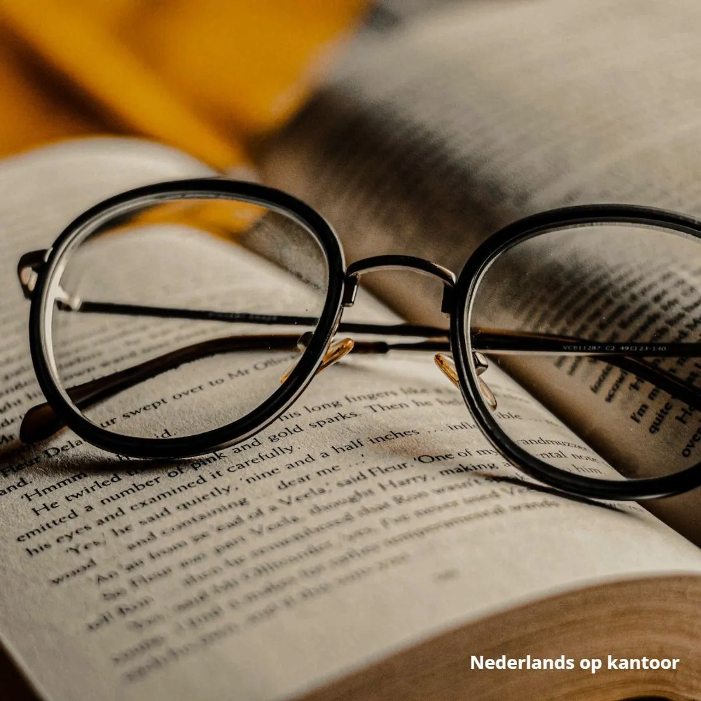
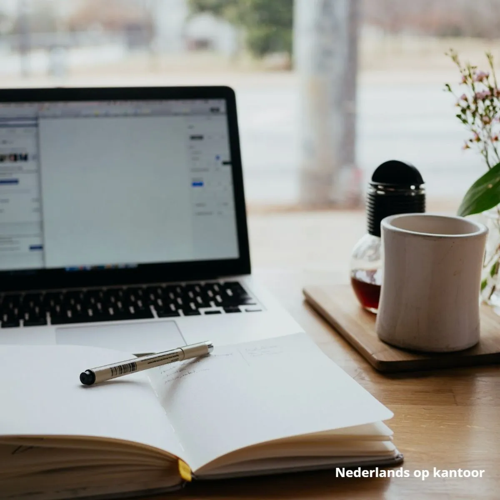

Helping professionals boost their Dutch language skills
Ik heet Tine Vermoere en ik ben docent zakelijk Nederlands. Al meer dan 10 jaar geef ik met veel passie les aan professionals van verschillende bedrijven. Taal zit in mijn DNA. Ik studeerde Germaanse Taal- en Letterkunde en leerde meerdere talen waaronder Frans, Duits, Spaans en Turks. Ik heb 2 e-learnings ontworpen voor studenten met een intermediair niveau. In het totaal schreef ik hiervoor meer dan 250 oefeningen op zakelijke woordenschat en grammatica! Een voorsmaakje van de inhoud en de stijl zie je in mijn YouTubefilmpjes.
Naast het lesgeven werk ik deeltijds als opleidingsverantwoordelijke bij een multinational. Mijn eigen bedrijfservaring is een grote meerwaarde tijdens mijn lessen. Sinds 2007 woon en werk ik in Berlijn. In mijn vrije tijd ga ik heel graag naar concerten. Ik zing ook als soprano in een koor. Ik hou veel van reizen en nieuwe mensen ontmoeten. Maar bovenal ben ik mama van Finn, het allerliefste jongetje ter wereld.
Zakelijk Nederlands B1+/B2 e-learning
Woordenschat training

Grammatica training

Testimonials from my students
Tine is een professionele docent Nederlands. Tijdens onze lessen toonde ze een hoge mate van betrokkenheid en professionaliteit. Ik heb geleerd hoe ik de Nederlandse taal voor werkdoeleinden kan gebruiken. Ze is een positief en vriendelijk persoon, met een geweldige houding ten opzichte van lesgeven.
Tine is zeer professioneel en serieus in haar werk. Ze neemt de tijd om goed uit te leggen en nuttige tips te geven. Ze heeft veel geduld met haar leerlingen en past zich aan ieders tempo aan. Tine is spontaan, enthousiast en weet een goede sfeer te creëren.
Ik heb een hele fijne cursus gehad bij Tine. Ze is een zeer goede lerares en mijn niveau van Nederlands verbetert veel met haar.